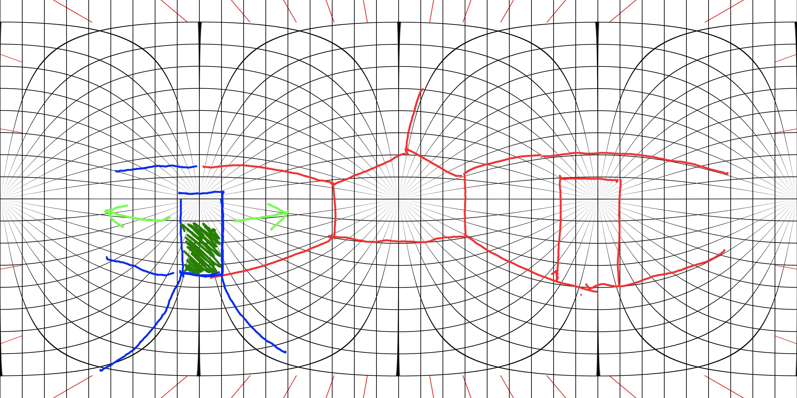

Avec Sketch 360, vous pouvez créer des croquis panoramiques à partir d'un point de vue unique en regardant dans toutes les directions. Les caméras 360 sauvegardent ces images sphériques dans une image JPEG plate en utilisant une projection équirectangulaire and ajouter des metadonnées spécifiques aux images pour les identifier en tant que photo 360. Sketch 360 sauvegarde les fichiers d'une façon que les croquis puissent être vus comme des photos 3Dsur des sites comme Facebook, Adobe Lightroom.com, et Kuula.co.
Sketch 360 dispose de deux surfaces principales, un canevas de dessin et une vue 360. Vous dessinez sur le canevas avec un stylo ou le toucher et chaque fois qu'un trait est ajouté, la vue 360 est mise à jour, tournée vers le point du trait dessiné. A tout moment, vous pouvez tourner la vue 360 avec votre doigt pour voir une autre vue du croquis.
Avec un périphérique qui supporte un stylet comme le Microsoft Surface Duo ou le Samsung Galaxy Note, vous dessinez avec le stylet et manipulez la position et le zoom du canevas avec vos doigts. Sur des périphériques ne disposant pas de stylet, vous pouvez permutter vers un mode de dessin avec le toucher pour dessin comme un stylet ou effacer les traits à la place d'étirer ou zoomer. En addition de l'utilisation du "pinch to zoom", vous pouvez utiliser le slider de zoom.
Si vous utilisez un stylet avec une gomme comme le Surface Pen, vous pouvez effacer les traits en appuyant la gomme sur celui-ci. Si vous utilisez le toucher, alors pressez le bouton gomme pour permutter vers le mode effacer.
Pour aider avec la connexion des angles gauches et droits d'un croquis dans la vue 360, vous pouvez voir un To help with connecting the left and right edges of a drawing in the 360 view, vous pouvez voir un bord de dessin opposé lors du dessin à proximité du bord gauche ou droit de la zone de dessin.
Dans la vue 360, pressez le bouton inclinaison & rotation pour activer le capteur gyroscopique du périphérique et déterminer l'inclinaison et la rotation de la caméra.
A côté du canevas de dession, vous pouvez taper sur le bouton de couleur ou d'épaisseur pour changer la couleur ou l'épaisseur du trait de l'encre qui est crée.
Activer les guides orthogonaux vous aide à dessiner des lignes qui sont alignées avec les axes primaires dans la grille équirectangulaire. Si vous faites face au point central du canevas de dessin :
Sketch 360 a été créé par Michael Scherotter et
distribuée gratuitement
développée par Microsoft Surface dans le
Windows Store
en 2018 to aider à la création de croquis 360. Ici il y a quelques
exemples de croquis
il dessinat en utilisant les tablettes Microsoft Surface Pro et Surface Go.
Michael a été
dessinateur et gardait un journal
pendant 30 ans depuis qu'il étudiait l'architecture au lycée. Il construit sa carrière en développement
avec une passion spécifique pour développer des outils créatifs mais n'a jamais arrêté de dessiner.
Sketch 360 pour Android a été créé par des employés de Microsoft, Michael Scherotter, Matthew Leibowitz, Shane
Neuville, et Komal Priya lors d'un
hackathon organisé par le
Microsoft
Garage
.
Outils Equirectangulaire (Eq A Snap) par António B. Araújo